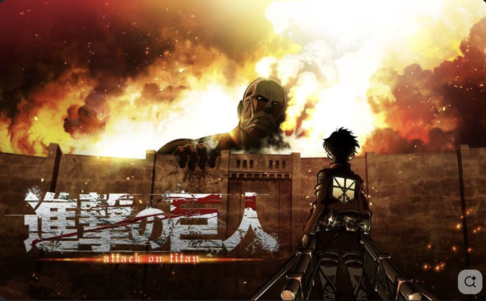
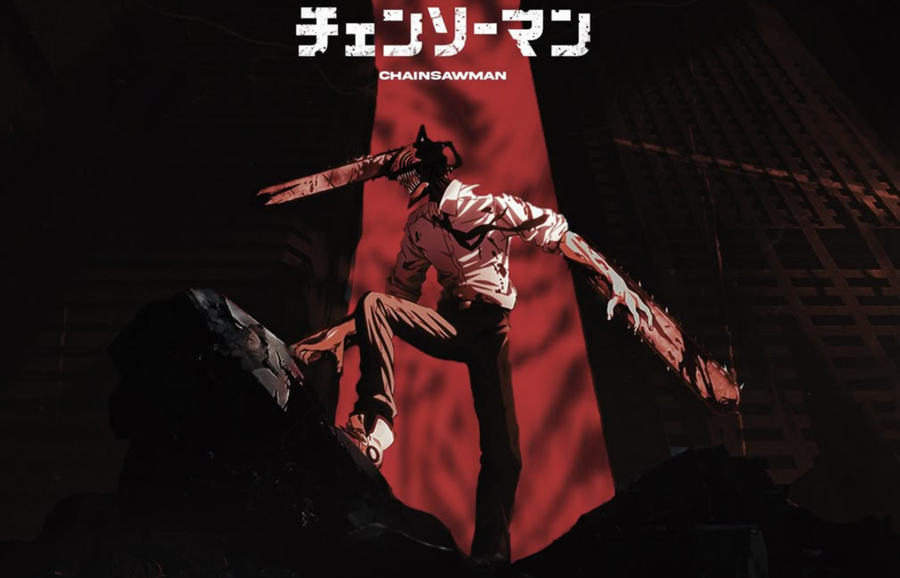

Action
1. One Punch Man

One-Punch Man is a Japanese anime and manga series about a superhero named Saitama who has the ability to defeat any enemy with a single punch, which has led him to become bored with his overwhelming power and lack of challenge. The story follows Saitama and his cyborg disciple, Genos, as they join the Hero Association and fight various monsters and supervillains in a world full of heroes and villains. The series is a action that explores the life of the world's most powerful hero, who is unrecognized and often taken for granted by those around him.
2. Attack On Titan

Attack on Titan is a story about humanity's struggle for survival against giant, man-eating humanoids called Titans, who force survivors to live within massive walls. The plot follows Eren Yeager and his friends as they join the military to fight Titans after their hometown is destroyed and Eren's mother is killed. Over time, the series evolves from a simple survival story into a complex narrative of political intrigue, war, and the exploration of human nature and history, as the characters uncover the truth about the Titans and the world outside the walls.
3. Demon Slayer

Demon Slayer is about a teenage boy named Tanjiro Kamado who becomes a demon slayer after a demon slaughters his family and turns his younger sister, Nezuko, into a demon. He joins the Demon Slayer Corps to find a cure for his sister and avenge his family by hunting down and defeating demons and their leader, Muzan Kibutsuji. The story follows his journey of growth, his bonds with other demon slayers, and their battles against powerful demons.
4. Dragon Ball Z

The Dragon Ball storyline follows a young boy named Son Goku who, with his friend Bulma, goes on a quest to find the seven mystical Dragon Balls that grant wishes. The original series follows Goku from childhood to adulthood as he trains in martial arts, while the sequels, Dragon Ball Z and Dragon Ball Super, depict him and his friends protecting Earth from increasingly powerful aliens and enemies.
5. Chainsaw Man

The Chainsaw Man anime is a story about a poor young man named Denji who, after being betrayed and killed, is resurrected as a human-devil hybrid with chainsaws for body parts after merging with his pet devil, Pochita. He is then recruited by the Public Safety Devil Hunters, a government agency, to hunt down devils alongside other devil hunters and to live a more comfortable life with his new powers. The series is known for its gore, dark humor, and over-the-top action sequences.